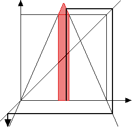
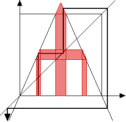

| Recall the highest point of the tent map has height
s/2. |
| Consequently, if s > 2 the top of the
tent map extends above the top of the unit square. |
| Graphical
iteration implies the points near 1/2 iterate out of the unit square, and then
on to -∞ (top figure). |
| Then points that iterate to the middle will escape to
-∞ (bottom picture). |
|  |
 |
 |
|
| Continuing, the points that do not escape to -infinity form a
Cantor set. Can you find the dimension of this Cantor set as a function of s? |
| On the Cantor set, the tent map is
chaotic. One way to prove this is to coarse-grain
orbits (L for left side of 1/2, R for the right side), and investigate the
sequences that can be produced. This is a reasonably subtle problem. |